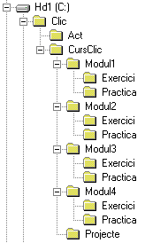

Consideracions pr�viesPer a realitzar aquest curs es requereixen uns coneixements i destreses b�siques en el domini de l'entorn Windows i d'Internet. En concret conv� estar familiaritzat amb operacions com crear carpetes, copiar fitxers, canviar els noms de fitxers i carpetes, instal�lar programes, comprimir i descomprimir amb el WinZip, navegar per la web, enviar i rebre missatges de correu electr�nic... Abans d'iniciar el curs cal haver adquirit els coneixements b�sics en la creaci� i tractament d'imatges i so digital. En el Pla de Formaci� Permanent del Departament d'Ensenyament s'ha programat aquest curs conjuntament amb els m�duls comuns Elements de disseny, Imatge digital i So digital. Objectius del cursEls objectius principals del curs s�n: - Con�ixer l'entorn Clic 3.0 i les seves possibilitats did�ctiques. - Realitzar activitats en les diverses modalitats que ofereix el programa. - Integrar recursos multim�dia en materials did�ctics. - Programar seq��ncies d'activitats organitzades en paquets. - Retocar i adaptar materials existents a requeriments did�ctics espec�fics. - Familiaritzar-se amb el funcionament del sistema d'informes i seguiment de progr�s dels alumnes. Estructura del cursEl temps necessari per a realitzar el curs complet s'estima en unes 60 hores. El curs consta de set m�duls i un projecte final:
Els tres primers m�duls (que s�n comuns a altres cursos de la SGTI) s'organitzen a partir d'un conjunt de pr�ctiques on s'intercala l'explicaci� dels continguts. Els quatre darrers m�duls tenen aquesta estructura: A. Un document principal on s'expliquen els continguts del m�dul. B. Un conjunt de pr�ctiques comentades pas a pas. Conv� realitzar-les en l'ordre que es proposa, ja que sovint en una pr�ctica s'aprofiten materials creats en les anteriors. C. Una proposta d'exercicis a realitzar, que haureu de realitzar i enviar al tutor o tutora del curs per correu electr�nic.
Al final del curs haureu d'elaborar un projecte consistent en un paquet d'activitats que caldr� enviar tamb� al tutor o tutora per tal de superar una avaluaci� positiva del curs. Lliurament dels exercicisAbans d'enviar els vostres materials cal comprimir-los en format ZIP (utilitzant el WinZip o alguna eina similar). Els materials corresponents als exercicis de cada m�dul s'han d'enviar junts, comprimits en un �nic fitxer ZIP que cal annexar a un missatge de correu electr�nic adre�at al tutor o la tutora del curs. �s important fer constar en el missatge el vostre nom i adre�a de correu electr�nic, aix� com el m�dul al qual pertanyen els exercicis que s'envien i una breu descripci� del seu contingut. Requisits de programariTot i que el programa Clic funciona tamb� en entorns Windows 3.1, els materials d'aquest curs s'han dissenyat per a un ordinador multim�dia equipat amb el Windows 95, 98, NT o 2000. Conv� repassar que els controladors de la targeta de so estiguin ben instal�lats i configurats, aix� com les connexions i el correcte funcionament dels altaveus i el micr�fon. Per a realitzar les pr�ctiques i els exercicis del curs cal disposar del programari seg�ent:
Organitzaci� dels fitxersAbans de comen�ar el curs �s convenient preparar al disc dur un conjunt de carpetes que ens serviran per a emmagatzemar-hi els fitxers de les pr�ctiques i els exercicis. El Clic acostuma a instal�lar-se a la carpeta C:\CLIC. Dins d'aquesta carpeta haur�eu de crear-ne una altra anomenada CursClic. Dins de CursClic cal crear cinc carpetes, anomenades Modul1 (sense accent!), Modul2, Modul3, Modul4 i Projecte. Dins cadascuna de les quatre primeres carpetes cal crear-ne dues m�s, amb els noms Practica (tamb� sense accent) i Exercici. Tot plegat hauria de quedar aix�:  A l'inici de la primera pr�ctica de cada m�dul hi ha un fitxer ZIP que cont� els materials necessaris per a realitzar-la. El contingut d'aquests fitxers ZIP s'haur� de descomprimir dins de la carpeta "Practica" corresponent a cada unitat. Tamb� en alguns dels exercicis s'inclou un fitxer ZIP, que caldr� descompactar a la carpeta "Exercici" del m�dul corresponent. |